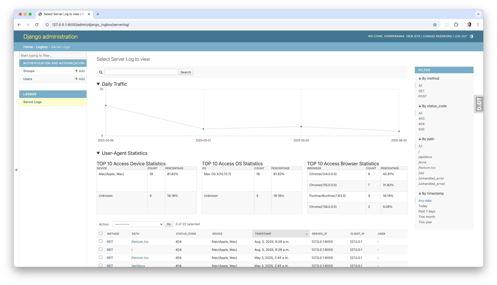
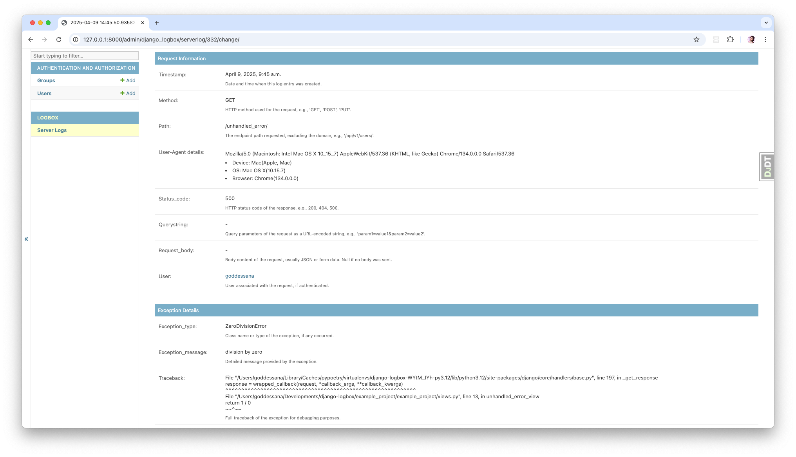

Introduction
What is Django-Logbox?
Django-Logbox is a Django app that logs all HTTP request information performed in Django. It provides a comprehensive logging solution that captures detailed information about requests, responses, and exceptions, making it easier to monitor and debug your Django application.
 Features
Django-Logbox captures and stores the following information for each request:
HTTP Method: GET, POST, PUT, PATCH, DELETE
Request Path: The endpoint path requested
HTTP Status Code: 200, 404, 500, etc.
User-Agent: Browser and device information
Device, OS, Browser: Parsed from User-Agent
Query String: URL parameters
Request Body: POST/PUT data
Timestamp: When the request was made
Exception Information: Type, message, and traceback (if an exception occurred)
IP Addresses: Both server and client IPs
User Information: The authenticated user (if any)
How it works?
Django-Logbox relies on Django’s middleware system and a background logging thread to efficiently capture and store request and exception data with minimal impact on request latency.
Middleware Integration - LogboxMiddleware is inserted into Django’s request/response cycle. - On each request, after the response is generated, the middleware calls add_log with the request and response objects. - If an unhandled exception occurs during processing, process_exception calls add_log with the exception details instead of a response.
Log Data Preparation - The add_log function uses get_log_data to extract request metadata (HTTP method, path, headers, querystring, body), user agent information, status code, client/server IPs, authenticated user, timestamp, and exception details (type, message, traceback).
Asynchronous Logging Thread - A singleton ServerLogInsertThread runs in the background, maintaining a fixed-size queue for incoming log entries. - add_log enqueues each log record by creating a ServerLog model instance with the collected data. - If the queue reaches its configured capacity, the thread immediately flushes all queued entries to the database using Django’s bulk_create for efficiency. - Independently, the thread wakes up at a configurable interval to batch-insert any accumulated logs, ensuring periodic database writes.
Graceful Shutdown and Bulk Insertion - The logging thread listens for system signals (SIGINT, SIGTERM). - On shutdown, it triggers a final bulk insertion of any remaining queued logs before exiting, guaranteeing no data loss.
By offloading log insertion to a dedicated thread and batching writes, Django-Logbox minimizes overhead on the request thread while providing comprehensive and reliable logging.